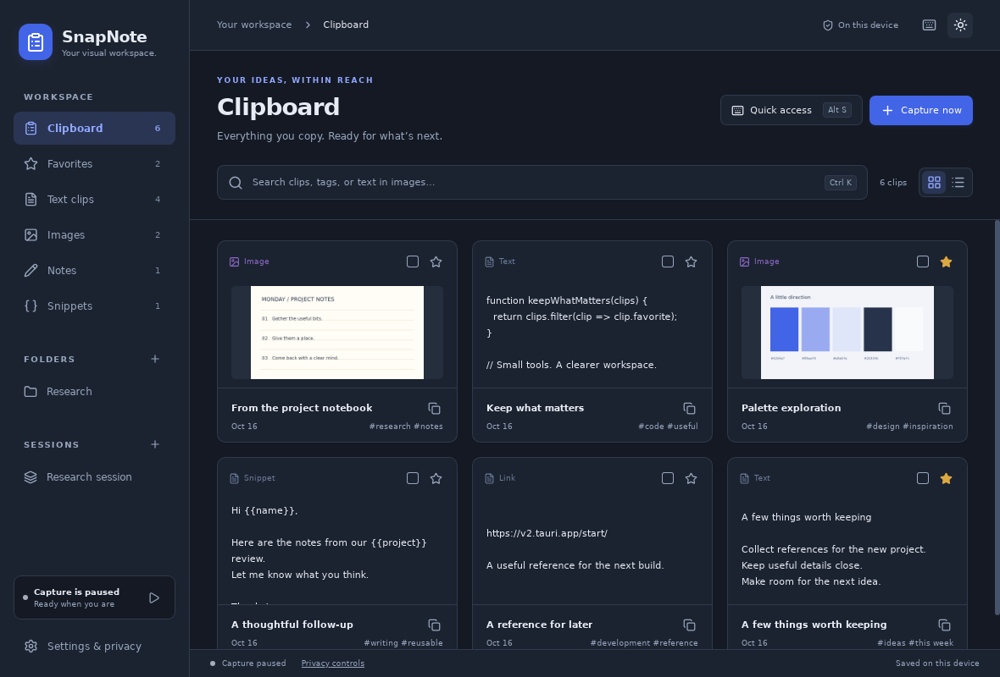
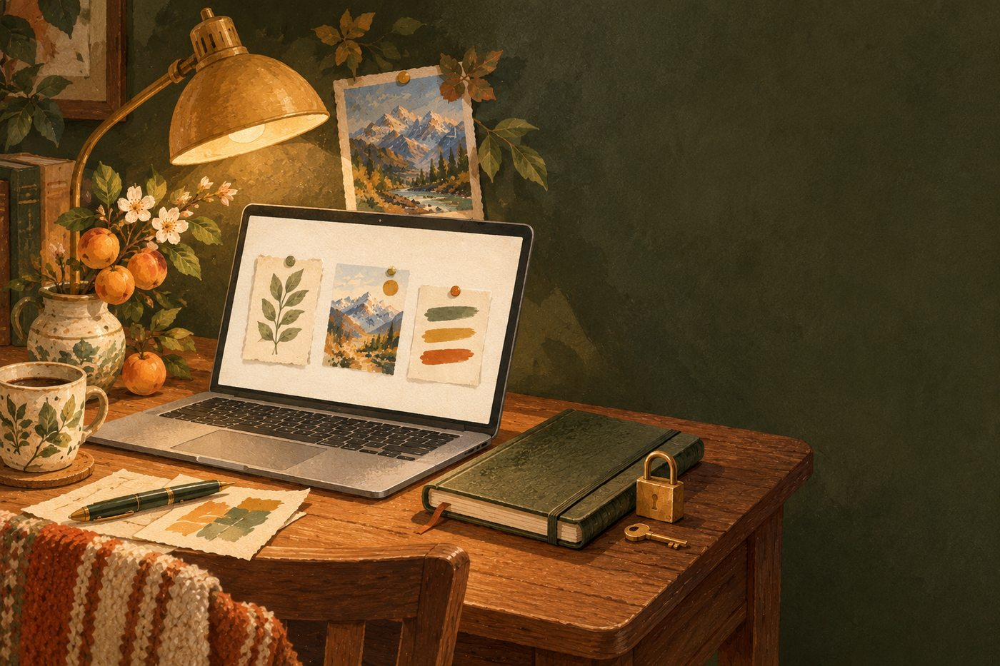
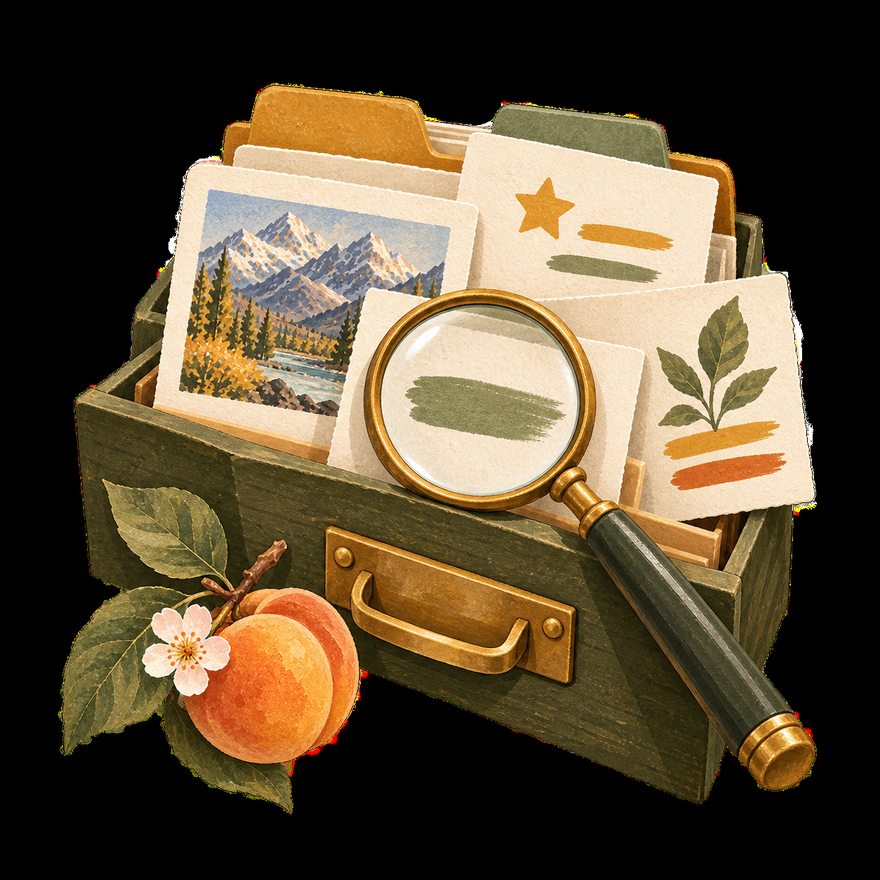
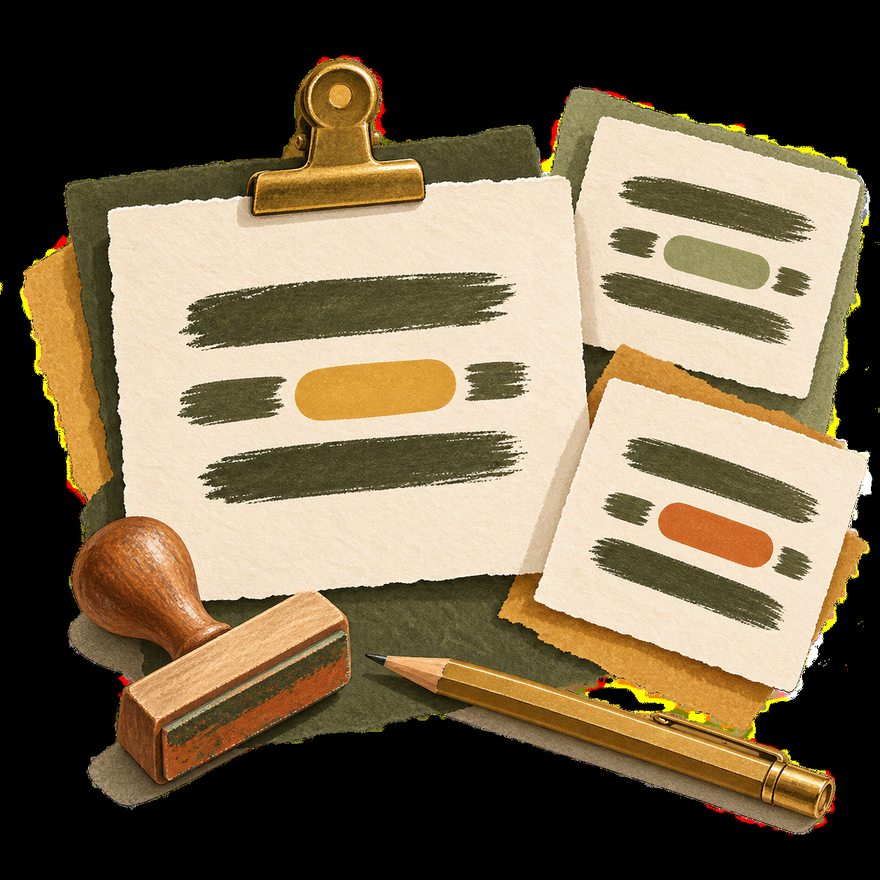
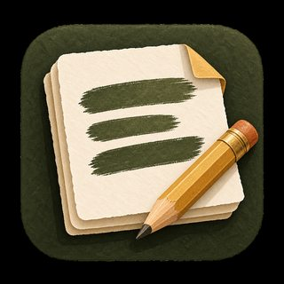

A day you’ll recognise
Three small rescues, one quiet tool.

-

9:04 — MorningThe address that arrived too early
A friend sends a café address, then a train time, then a link — and your clipboard forgets all but the last. With automatic capture on, SnapNote keeps each one. Search “café” at the gate and breathe out.
-

14:20 — AfternoonThe reply you keep rewriting
The same thank-you note, the same status format, week after week. Save it once as a snippet with
{{name}}and{{project}}. This time it takes eleven seconds, and it feels a little magical anyway. -
22:47 — Late evening
The screenshot full of numbers
A chart someone pasted in a meeting. Pin it on screen, crop the region you need, and let local OCR pull the text out so it becomes searchable. Nobody had to open a spreadsheet at midnight.

Small rescues, all day — and not one of them left your machine.